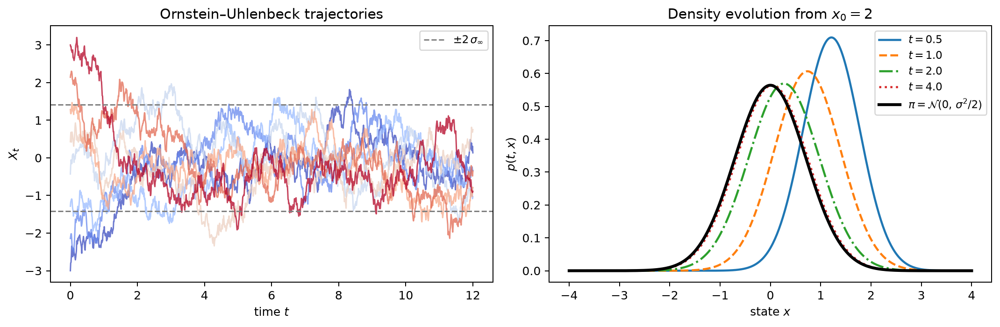
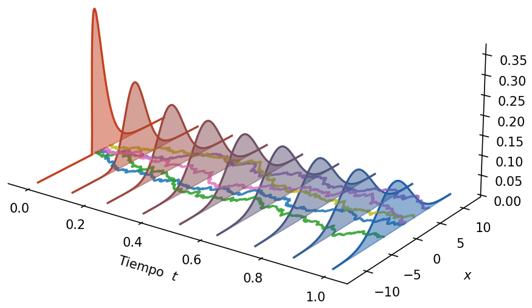
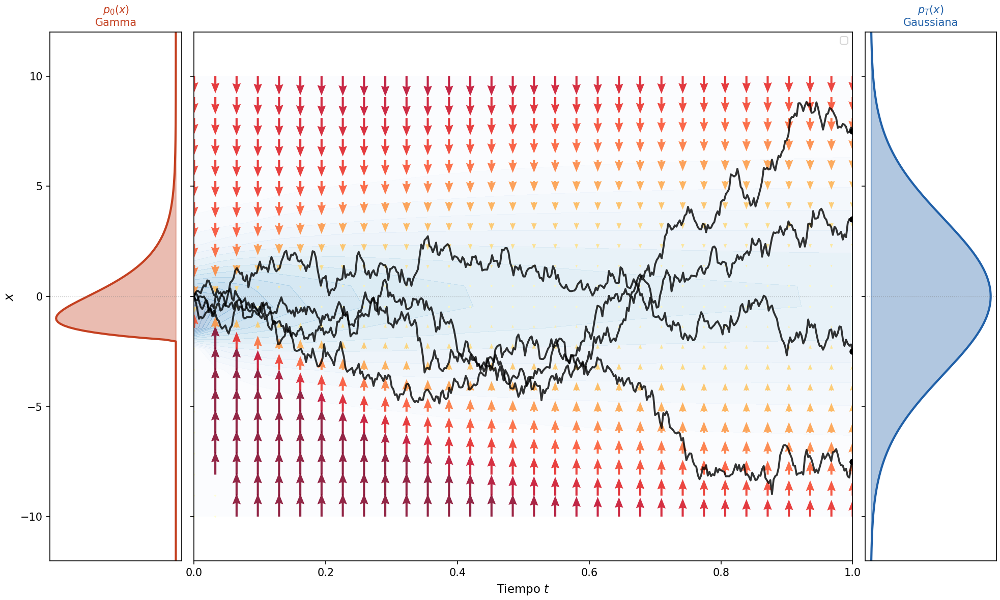
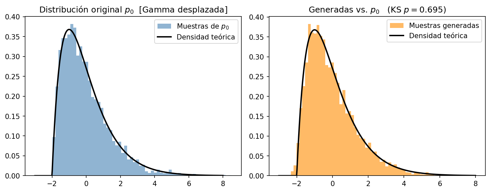

Score-based generative modeling through stochastic differential equations
This project is a course monograph on the mathematics behind diffusion-based generative models. It develops the stochastic-process machinery that turns a collection of observed data into a sampler for new data, and accompanies the derivations with a reproducible one-dimensional experiment.
Use a forward stochastic process to turn an unknown data distribution into a known prior, learn the score along that path, and run the dynamics backward to generate new samples.
1 · Goal: learn a distribution well enough to sample from it
Suppose we are given a dataset: a finite collection of observations generated by some unknown distribution. We do not know its density explicitly, but we want to construct an approximation good enough to sample new observations that resemble the data.
In this monograph we work through the complete construction for data drawn from a shifted Gamma distribution. That distribution is our concrete p0: the unknown data distribution we want to approximate. The point is not the Gamma family itself, but having a distribution for which the forward and reverse dynamics can be inspected end to end.
Diffusion models approach the problem indirectly. Rather than fitting p0 in one step, they define a tractable stochastic path that progressively transforms it into a simple reference distribution. Once that path and its reverse are understood, sampling becomes a matter of starting from the reference distribution and running the learned dynamics backward.
2 · Diffusions: a stochastic path from data to a prior
A diffusion is a stochastic process defined by an Itô stochastic differential equation. The drift controls the deterministic tendency of the process; the diffusion coefficient controls the injected Brownian noise.
For the concrete example we use the Ornstein–Uhlenbeck process:
Its stable drift contracts the state toward zero while the noise spreads probability mass. The trajectories and density curves illustrate how the process evolves over time.

For a sufficiently long diffusion time, the process is ergodic: it forgets its initial condition and converges to a stationary distribution. In practice, we choose a finite T large enough for this approximation to hold, so the terminal state XT is effectively independent of the original data distribution p0. This terminal distribution becomes our tractable prior for initializing the reverse dynamics.

3 · Reverse-time diffusion
The forward process takes us from the data distribution p0 to a tractable prior pT. The key result is that we can construct a process that runs in the opposite direction, from the prior back toward the data distribution. The time-reversed process is itself a diffusion.
Define the reversed trajectory by X̂t = XT−t. It satisfies an SDE with the same structure as the forward equation, but with time-reversed coefficients and a new drift:
ûi(t,x) = −ui(T−t,x) + [∂xj(aij(T−t,x)p(T−t,x))] / p(T−t,x)with a = σσ⊤. The hats indicate the coefficients of the reverse-time diffusion.
These formulas are constructive: if we knew the evolving density, they would tell us how to simulate from the prior back to the original distribution. The remaining challenge is the density-dependent term in the reverse drift.
4 · The score is the object the network must learn
When the diffusion coefficient depends only on time, the spatial derivatives of (a=sigma^2 I) vanish. Equation (2) then reduces to the simpler reverse drift
We define the unknown density-dependent term as the score:
Substituting this definition into equation (3) gives the form used by the model:
This is exactly the density-dependent term that appears in the reverse drift from the previous section. The score is therefore not an auxiliary visualization: it is the quantity that tells the reverse diffusion how to correct the time-reversed dynamics.
The score points toward regions of higher probability. It is not a density estimate: it is a vector field that changes with both the state and the noise level. Once it is available, it supplies the correction that guides the reverse process back toward p0. Score matching provides a way to learn this field with a neural network rather than estimating the density explicitly.

5 · Learning the score with denoising score matching
The marginal score is unknown, but it can be learned without estimating or normalizing the density. Hyvärinen's score-matching result shows that, under suitable boundary conditions, minimizing the squared error to the unknown score is equivalent to minimizing an objective that depends only on the network and its spatial derivatives:
For diffusion models we use the denoising version. A clean sample x is corrupted with the known transition kernel at a selected time t. For Gaussian corruption, the conditional score is analytic:
The network is trained to predict this target over many clean samples and a discrete grid of diffusion times. The practical loss is therefore:
Each time point teaches the same network how the direction field changes as the data are progressively blurred. The network learns a field, not a normalized probability density; once learned, that field can be inserted into equation (7).
Training and sampling loop
for each optimization step:
sample x ~ p₀ and a time t from {t₁, …, tK}
sample x̃ from the forward diffusion qₜ(· | x)
target ← −(x̃ − x) / σₜ²
update θ to reduce ||sθ(x̃, t) − target||²
to generate:
sample xT from the stationary prior
integrate the reverse SDE from T down to 0 using sθ
return the resulting x₀6 · Numerical demonstration
We start from a shifted Gamma distribution, diffuse it with an OU process, learn the score by denoising score matching, and integrate the reverse dynamics from the Gaussian prior. The recovered samples match the reference distribution in this one-dimensional experiment.

7 · References
The monograph develops the construction from the following results and papers:
- Anderson (1982) — reverse-time diffusion equations and the time-reversal construction.
- Øksendal (2003) — stochastic calculus and numerical simulation of stochastic differential equations.
- Hyvärinen (2005) — score matching without evaluating the normalized density.
- Vincent (2011) — denoising score matching and the conditional-score identity.
- Song et al. (2021) — score-based generative modeling through stochastic differential equations.